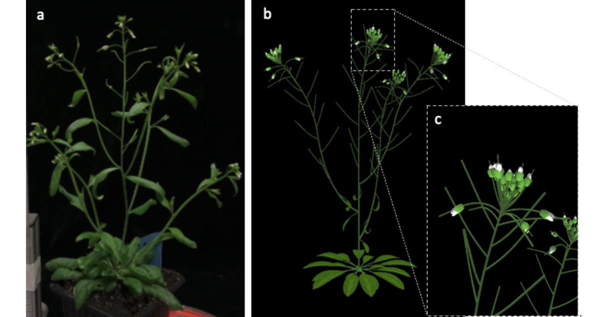
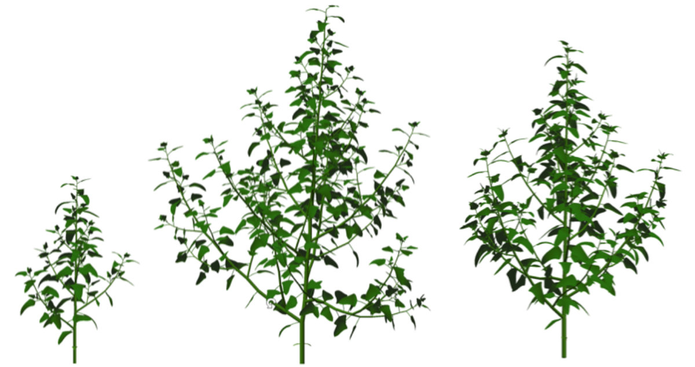
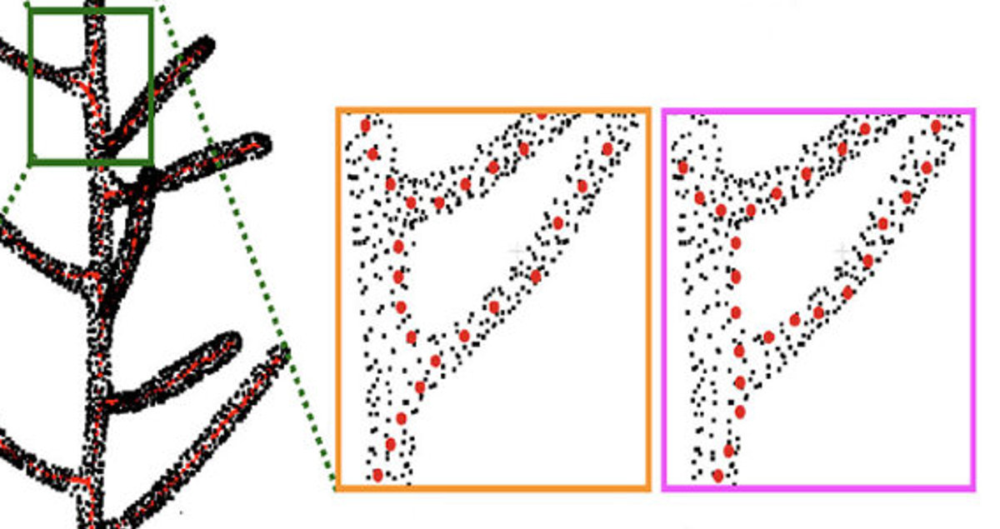
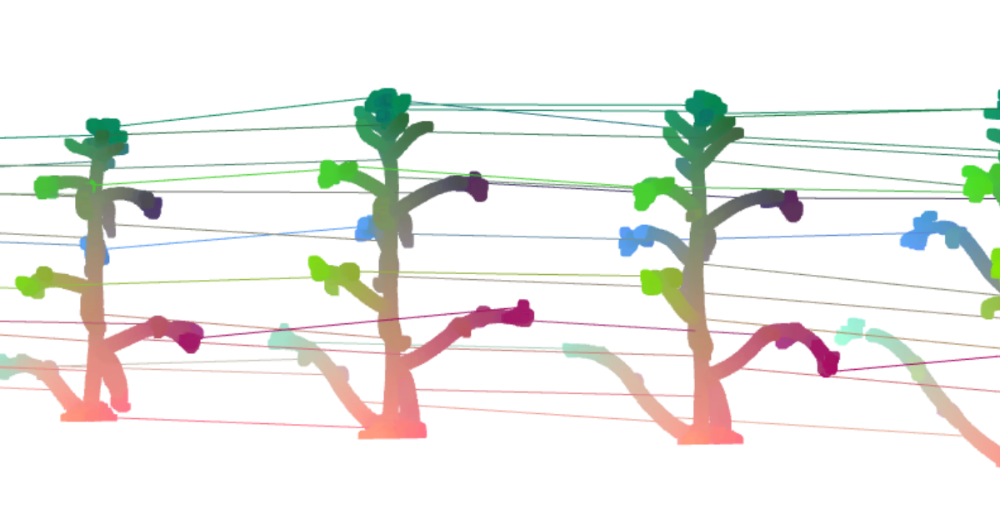

The work on the plant models has resulted in approved
models for Arabidopsis thaliana and tomato plants. The
model of A. thaliana was successfully used to train
neural networks for the semantic segmentation of images
of real plants and to produce high-quality point clouds
for subsequent machine learning and analysis tasks.

This motivates the work to go further into the realistic
rendering of plants and improve the physical coherence
of the generated 3D plants. Existing state-of-the-art
models, including ours, do not correctly detect and
handle intersecting organs, for example. This problem is
currently investigated together with other key issues
related to photo-realistic rendering of plants.

The challenge remains to robustly segment 3D plant data
into its constituent organs can be tackled using several
methods, from geometric methods to machine learning
methods that use 2D image segmentation or 3D point cloud
segmentation. An additional challenge is the precise
extraction of the plant's skeleton from a 3D
representation.

Tracking the plant growth over time raises the issue on
the space-time registration of the collected 3D
data. The combination of plant models and machine
learning may help us predict the plant's shape ahead of
time.